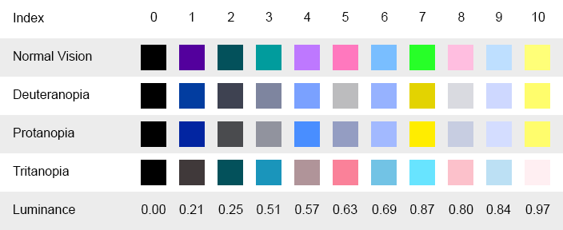
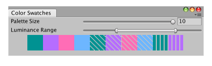

| palette | An array of colors to populate with a palette. |
| minimumLuminance | Minimum allowable perceived luminance from 0 to 1. A value of 0.2 or greater is recommended for dark backgrounds. |
| maximumLuminance | Maximum allowable perceived luminance from 0 to 1. A value of 0.8 or less is recommended for light backgrounds. |
int The number of unambiguous colors in the palette.
Gets a palette of colors that should be distinguishable for normal vision, deuteranopia, protanopia, and tritanopia.

The set of colors from which to draw, along with their perceived luminance values.
Allocate the size of your palette before passing it to this method to specify how many colors you need. The return value indicates how many unambiguous colors exist in the palette. If this value is less than the size of the palette, then the palette repeats colors in order.

A window to preview swatches that should be distinguishable for most vision conditions.
Add the following script to Assets/Editor as ColorSwatchExample.cs and navigate to the menu option Window -> Color Swatch Example.
using UnityEditor; using UnityEngine; using UnityEngine.Accessibility;
public class ColorSwatchExample : EditorWindow { // size of swatch background textures to generate private const int k_SwatchTextureSize = 16; // the maximum number of swatches for this example private const int k_MaxPaletteSize = 10;
[MenuItem("Window/Color Swatch Example")] private static void CreateWindow() { var window = GetWindow<ColorSwatchExample>(); window.position = new Rect(0f, 0f, 400f, 80f); }
// the background textures to use for the swatches private Texture2D[] m_SwatchBackgrounds = new Texture2D[k_MaxPaletteSize];
// the desired number of swatches [SerializeField] private int m_PaletteSize = 8; // the range of desired luminance values [SerializeField] private Vector2 m_DesiredLuminance = new Vector2(0.2f, 0.9f); // the colors obtained [SerializeField] private Color[] m_Palette; // the number of unique colors in the palette before they repeat [SerializeField] private int m_NumUniqueColors;
// create swatch background textures when window first opens protected virtual void OnEnable() { titleContent = new GUIContent("Color Swatches");
// create background swatches with different patterns for repeated colors m_SwatchBackgrounds[0] = CreateSwatchBackground(k_SwatchTextureSize, 0, 0); m_SwatchBackgrounds[1] = CreateSwatchBackground(k_SwatchTextureSize, 1, 4); m_SwatchBackgrounds[2] = CreateSwatchBackground(k_SwatchTextureSize, 1, 3); m_SwatchBackgrounds[3] = CreateSwatchBackground(k_SwatchTextureSize, 6, 1); m_SwatchBackgrounds[4] = CreateSwatchBackground(k_SwatchTextureSize, 4, 3); m_SwatchBackgrounds[5] = CreateSwatchBackground(k_SwatchTextureSize, 6, 6); m_SwatchBackgrounds[6] = CreateSwatchBackground(k_SwatchTextureSize, 4, 2); m_SwatchBackgrounds[7] = CreateSwatchBackground(k_SwatchTextureSize, 6, 4); m_SwatchBackgrounds[8] = CreateSwatchBackground(k_SwatchTextureSize, 2, 5); m_SwatchBackgrounds[9] = CreateSwatchBackground(k_SwatchTextureSize, 1, 2);
UpdatePalette(); }
// clean up textures when window is closed protected virtual void OnDisable() { for (int i = 0, count = m_SwatchBackgrounds.Length; i < count; ++i) DestroyImmediate(m_SwatchBackgrounds[i]); }
protected virtual void OnGUI() { // input desired number of colors and luminance values EditorGUI.BeginChangeCheck();
m_PaletteSize = EditorGUILayout.IntSlider("Palette Size", m_PaletteSize, 0, k_MaxPaletteSize);
float min = m_DesiredLuminance.x; float max = m_DesiredLuminance.y; EditorGUILayout.MinMaxSlider("Luminance Range", ref min, ref max, 0f, 1f); m_DesiredLuminance = new Vector2(min, max);
if (EditorGUI.EndChangeCheck()) { UpdatePalette(); }
// display warning message if parameters are out of range if (m_NumUniqueColors == 0) { string warningMessage = "Unable to generate any unique colors with the specified luminance requirements."; EditorGUILayout.HelpBox(warningMessage, MessageType.Warning); } // otherwise display swatches in a row else { using (new GUILayout.HorizontalScope()) { GUILayout.FlexibleSpace(); Color oldColor = GUI.color;
int swatchBackgroundIndex = 0; for (int i = 0; i < m_PaletteSize; ++i) { // change swatch background pattern when reaching a repeated color if (i > 0 && i % m_NumUniqueColors == 0) ++swatchBackgroundIndex;
Rect rect = GUILayoutUtility.GetRect(k_SwatchTextureSize * 2, k_SwatchTextureSize * 2); rect.width = k_SwatchTextureSize * 2;
GUI.color = m_Palette[i]; GUI.DrawTexture(rect, m_SwatchBackgrounds[swatchBackgroundIndex], ScaleMode.ScaleToFit, true); }
GUI.color = oldColor; GUILayout.FlexibleSpace(); } } }
// create a white texture with some pixels discarded to make a pattern private Texture2D CreateSwatchBackground(int size, int discardPixelCount, int discardPixelStep) { var swatchBackground = new Texture2D(size, size); swatchBackground.hideFlags = HideFlags.HideAndDontSave; swatchBackground.filterMode = FilterMode.Point;
var pixels = swatchBackground.GetPixels32(); int counter = 0; bool discard = false; for (int i = 0, count = pixels.Length; i < count; ++i) { pixels[i] = new Color32(255, 255, 255, (byte)(discard ? 0 : 255)); ++counter; if (discard && counter == discardPixelCount) { discard = false; counter = 0; } else if (!discard && counter == discardPixelStep) { discard = true; counter = 0; } } swatchBackground.SetPixels32(pixels);
swatchBackground.Apply(); return swatchBackground; }
// request new palette private void UpdatePalette() { m_Palette = new Color[m_PaletteSize]; m_NumUniqueColors = VisionUtility.GetColorBlindSafePalette(m_Palette, m_DesiredLuminance.x, m_DesiredLuminance.y); } }
Did you find this page useful? Please give it a rating: